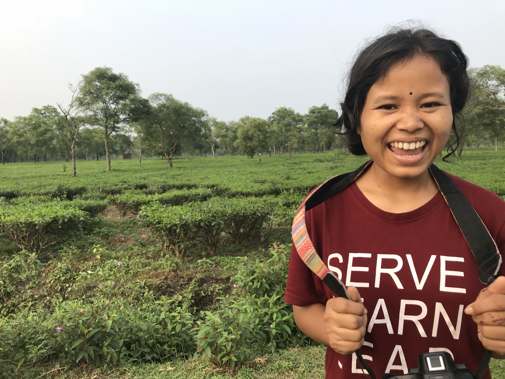
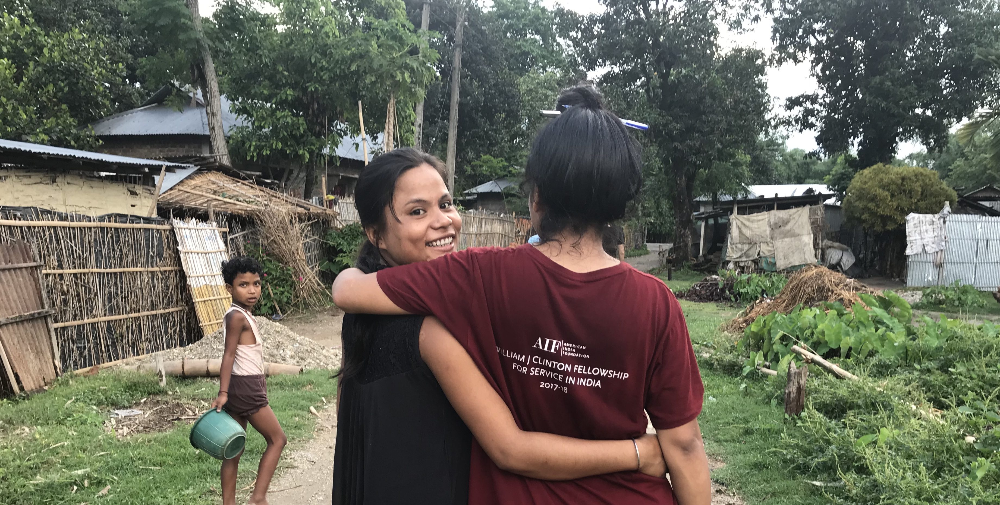

Understanding the Background
Feminist Outreach

Feminism is multicultural, diasporic, and intersectional, and it's these very differences in cultures, races, economic, and individuality, that will produce different needs. It is then addressing those particular needs that will empower real women in real time. Jasbir Jain, an Indian author of Indigenous Roots of Feminism: Culture, Subjectivity, and Agency, describes feminism as more than a voice of protest or questioning. It is moral self-reflection, a conquering of inner fears and a realisation of self-worth (p. 288.) So no, I don't think women empowerment is one size fits all. We cannot interpret history in monolithic universal terms, ignoring the differences in culture. So, the question posed :itself how could I make sure that I wasn't invoking Western feminist critique onto the problems that women in India faced?
As women, society often expects some - if not most - our accomplishments to be centered around marriage and children. It always seems to creep into conversations, even more so as you get older. So I wasn't very surprised when Nishat continued to asked, "Ma'am, do you not want a husband ma'am?"... for more information please follow this link
Exposing the Sterotypes
This limitation has kept the Bronx and Bihar vulnerable - vulnerable to repeat their history or simply continue living within the repercussions of their past realities. It's kept the people thinking they might not amount to anything other than the Bronx or Bihar -and that's suppose to be a 'bad' thing. The Bronx and Bihar's experiences have taught me about a different type of vulnerability: of forgotten and misunderstood people. It has allowed me to maneuver in this world with mindfulness, to never judge a book by its cover and things are never what they seem, giving me confidence and comfort with contradiction because I have indeed found beauty in the so called 'ugly'. My Bronx has and continues to be a dumping ground and Bihar continues to live behind its past's shadow still building but the love people have of these torn places remains. What the world expects us to be isn't what we have to be or even what we are. ... for more information please follow the link.

Why We Exist

It's not news that by educating girls we can uplift an entire country and, one can argue, help eliminate poverty. We should educate our girls and women because "a educated girl is likely to increase her personal earning potential, as well as reduce poverty in her community," and pass this on to the next generation to have "healthier and better educated children" (Bourne 2014). It also prevents early marriages and allow women to develop skills, knowledge and ultimately be empowered to make their own decisions and thus, claim their rights (USAID 2015). Gayle Smith, CEO of ONE Campaign states that, "We know that if we educate girls the developing world will yield 308 million dollars per day"s (GPE Secretariat 2018). Yet, educating our girls and women continues to be a difficult task.
MANSI works in many locations but my field visit was specific to Jharkhand, Seraikela-Kharsawan district, which is considered one of the poorest districts of Jharkhand, where "many villagers must travel arduous distances of up to ten miles for healthcare, leading to a widespread practice of home deliveries that deny basic and essential care needed to ensure a healthy start to life" (AIF 2018).
I witnessed firsthand what educating women can do - they can save lives. MANSI provides educational training to government appointed Sahiyas who then feel more confident and have more technical knowledge to assist in home-based deliveries. MANSI's Sahiyas were taking the training they were provided and helping premature babies live. Meet a few of the Sahiyas saving lives in rural Jharkhand, India, which I had the pleasure of interacting with : ... for more information please check out this link.